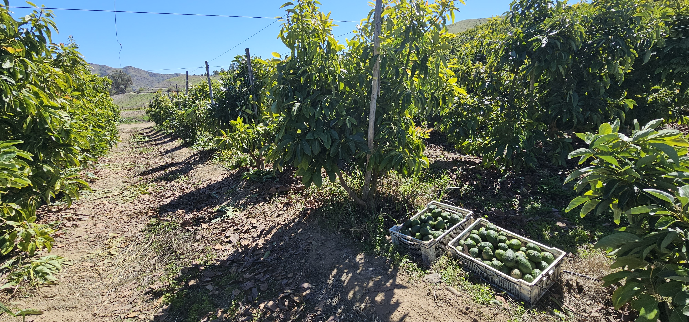
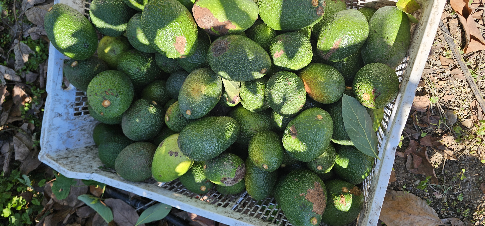
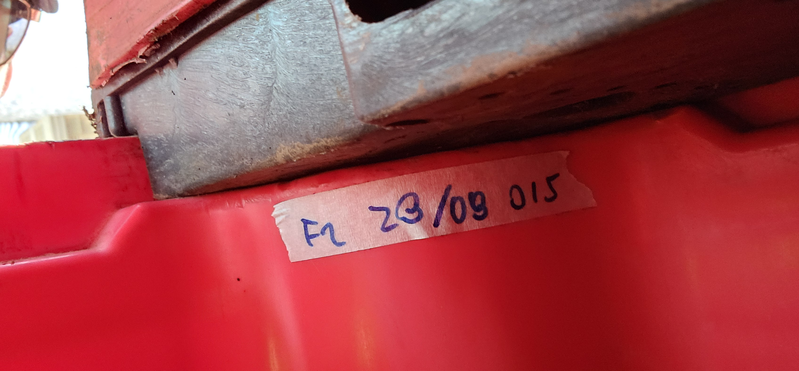
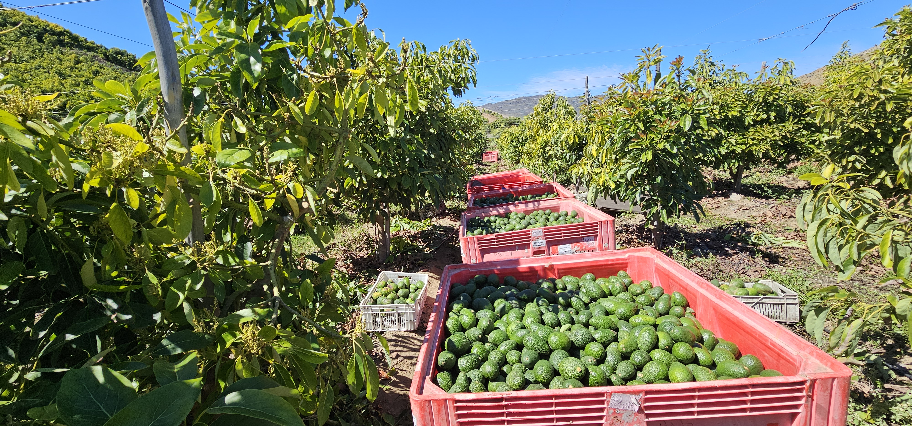
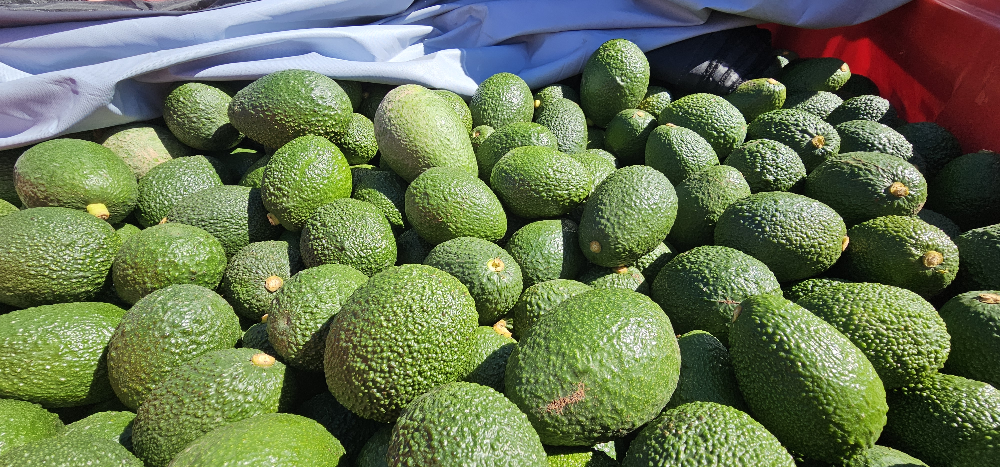
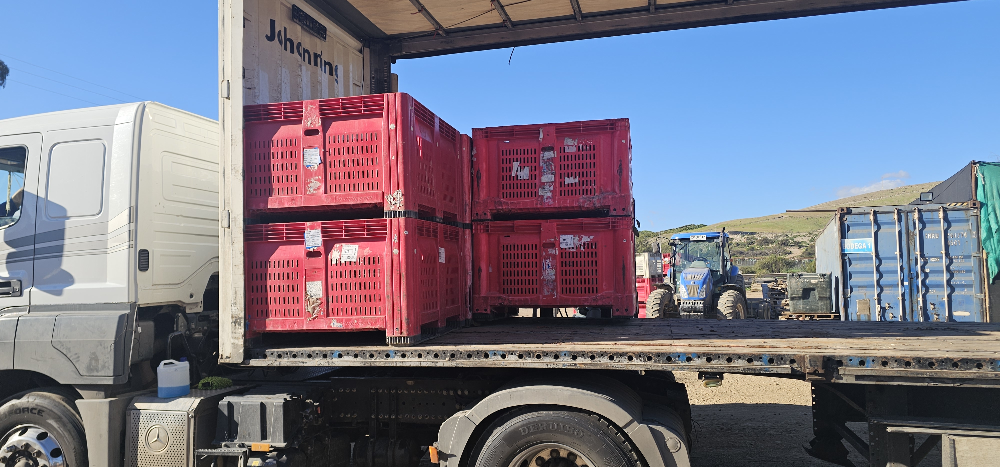

— Informe Final Terreno y Bodega
Monitoreo de Cosecha
Palta Hass 2026
FECHA: 28 de Agosto, 2026
LOTE: Identificación desconocida
ESTADO: ✓ AUDITADO
Consolidación de recepción de fruta fresca, cubicación por filas de apilamiento, balance de pesaje bruto/neto y verificación física del lote completo de 37 bins.
Cadena de Custodia & Manejo en Campo
SECUENCIA OPERATIVACorte en Huerto
Cosecha manual, llenado de baldes. Vaciado y clasificación directo en bins.
Tránsito Tractor
Traslado continuo hileras → acopio. Trenes de 4 bins por viaje.
Apilado Pilas
Control visual de descarga y consolidación en columnas verticales de 3 bins.
Pesaje Báscula
Movimiento en grúa horquilla. Registro bruto y descuento de tara fija en bodega.
Bodega & Carga
Almacenamiento en sombra y carga en transporte al final del turno.
Detalle de Pesaje por Columna
11 FILAS DE 3 BINS + 2 FILAS PARCIALES
Uniformidad de Carga
Las filas completas (01 a 11) presentaron una variabilidad inferior al 4.3%, lo que demuestra consistencia en el llenado por parte de la cuadrilla.
Pila Máxima (Columna 06):
1.261,0 kg Netos
3 Bins / Bruto: 1.381,0 kg
| Columna ID | Cant. Bins | Peso Bruto (kg) | Tara (kg) | Peso Neto Fruta (kg) | Observaciones |
|---|---|---|---|---|---|
| Columna 01 | 3 Bins | 1.334,5 | -120,0 | 1.214,5 | Estándar completo |
| Columna 02 | 3 Bins | 1.359,0 | -120,0 | 1.239,0 | Estándar completo |
| Columna 03 | 3 Bins | 1.326,0 | -120,0 | 1.206,0 | Estándar completo |
| Columna 04 | 3 Bins | 1.334,0 | -120,0 | 1.214,0 | Estándar completo |
| Columna 05 | 3 Bins | 1.336,5 | -120,0 | 1.216,5 | Estándar completo |
| Columna 06 | 3 Bins | 1.381,0 | -120,0 | 1.261,0 | ☆ Max Densidad |
| Columna 07 | 3 Bins | 1.356,0 | -120,0 | 1.236,0 | Estándar completo |
| Columna 08 | 3 Bins | 1.326,0 | -120,0 | 1.206,0 | Estándar completo |
| Columna 09 | 3 Bins | 1.353,0 | -120,0 | 1.233,0 | Estándar completo |
| Columna 10 | 3 Bins | 1.369,5 | -120,0 | 1.249,5 | Estándar completo |
| Columna 11 | 3 Bins | 1.356,0 | -120,0 | 1.236,0 | Estándar completo |
| Columna 12 | 2 Bins | 649,5 | -80,0 | 569,5 | Parcial (2 bins) |
| Columna 13 | 2 Bins | 894,5 | -80,0 | 814,5 | Parcial (2 bins) |
| TOTAL AUDITADO | 37 Bins | 16.375,0 kg | -1.480,0 kg | 14.895,0 kg | ✓ Cuadrante Cerrado |
Registro Fotográfico en Terreno
EVIDENCIA VISUAL DE COSECHA, ACOPIO Y CONTROL DE CALIDAD

FIG. 01 • Camino internoVerificación de cosecha en huerto
Revisión física directa de proceso de cosecha

FIG. 02 • DESCARTEDescarte en Suelo
Inspección de fruta de descarte in situ

FIG. 03 • ETIQUETADOID de bin
Ejemplo de etiquetado en bin

FIG. 04 • CONTROL DE COSECHAControl de Muestras
Verificación de clasificación y calidad estándar

FIG. 05 • Inspección pre-acopioEstación intermedia
Verificación de calidad antes de apilamiento de bins

FIG. 06 • Carga camiónDespacho a Planta
monitoreo de proceso de carga
Propuestas de mejora operacionales
EVOLUCIÓN DE EFICIENCIA Y RECOMENDACIONES
Mejoras de Proceso
-
01.
Etiquetado Flexible: Implementar etiquetas con ID único por bin para registrar el ingreso en báscula y erradicar omisiones manuales.
-
02.
Planificación de Cierre: Coordinar los últimos viajes de tractor para consolidar pilas completas de 3 bins y evitar cierres parciales innecesarios.
-
03.
Trazabilidad de Bloque: Vincular cada código de bin al sector exacto del huerto para contrastar kilos por hectárea contra plan nutricional.